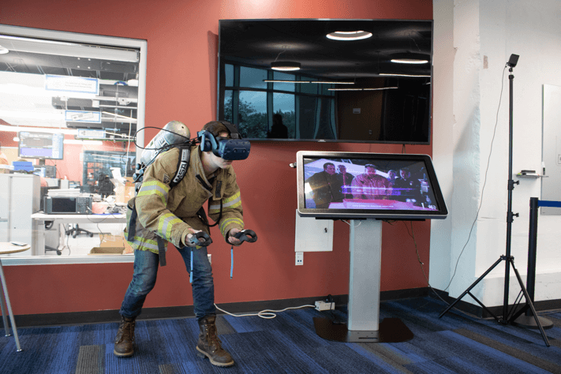

Since May 2016, I have been a Fellow at the National Institute of Standards and Technology (NIST) focused on User Experience design and front-end development for the Public Safety Communications Research Division (PSCR) on the User Interface and User Experience Research Portfolio.
Problem
Public Safety for technology encompasses difficult challenges for the technology and the developers and designers for the next generation of communication tools capable for first responders. Our team researches haptic feedback mechanisms (e.g., sound, vibration), vocal commands, and visual indicators (e.g., heads-up displays) as ways of communication for data and information to better serve the public safety community. To ensure the technology enhances the Public Safety mission, to efficiently and effectively complete their tasks with a minimum impediment, our team uses virtual and augmented reality to enable the testing, development, and usability assessment of future user interfaces.
As the User Experience specialist on the team I focus on creating immersive, well-designed experiences in virtual and augmented reality focused on prototyping and testing the next generation of public safety technologies. I work with the Virtual and Augmented Reality teams to help facilitate the designs, development, and testing.
Augmented Reality
PSCR AR Mobile Application
I designed the mobile application, 3D printed coasters, assisted in the development, and tested the usability of our marker-based AR mobile application. This app is the first app published for NIST on the Google Play Store and Apple App Store to showcase AR technology capabilities for first responders.
CHARIoT Challenge
IoT AR
Lead our AR team for our Internet of Things and Augmented Reality Prize Challenge, currently launched. The CHARIoT Challenge was built to help first responders act on critical smart city data faster.
Link to Challenge
IoT Magic Leap Proof of Concept
Our Augmented Reality team focused on testing, prototyping, and developing a possible solution to ensure the feasibility of IoT sensor data with Magic Leap Augmented Reality display.
The personal area network data is generated from a simulator script from PSCR that outputs timestamped readouts to a MongoDB database. The Augmented Reality application reads from that database and creates a first responder heads up display as well as a incident commander hologram view.
Haptics Interface Virtual Reality
Our team developed three scenarios for fire, emergency medical services, and police in virtual reality. These scenarios were used to investigate the relevance of haptic interfaces for assisting in first responders’ tasks such as navigating through a building, situational awareness, and biometric feedback. For the project, I worked with the virtual reality team on the scenarios experience, the visual design system for the user interfaces and usability testing.
Haptic prototypes were tested in a virtual reality scenario and in-person firefighter navigation course. In the final phase of the challenge, judges tested the haptic prototypes while completing search and rescue trials at the West Metro Fire Rescue Training Center’s commercial structure. The judges went through a building that was engulfed with smoke, solely relying on the haptic interface to guide them to the victim’s location and out of the structure safely. My team and I collected metrics and qualitative survey results to determine the feasibility of such prototypes.
Usability testing of haptic prototypes at live event
Police officer wearing haptic prototype in virtual reality headset
Firefighter wearing haptic prototype in virtual reality headset
Haptics Interface Video
West Metro firefighters test safety product prototypes. (credit: CBS)
Future
For our next research as a team, we are working on developing and maintaining new ways for users to interact with data and communication tools through virtual and augmented reality. Our augmented reality portfolio is currently working on WebXR platform using AFrame and AR.js.
I will be attending CHI2020 the Everyday Proxy Objects Virtual Workshop for Virtual Reality in May to present this work and meet fellow researchers in this field.